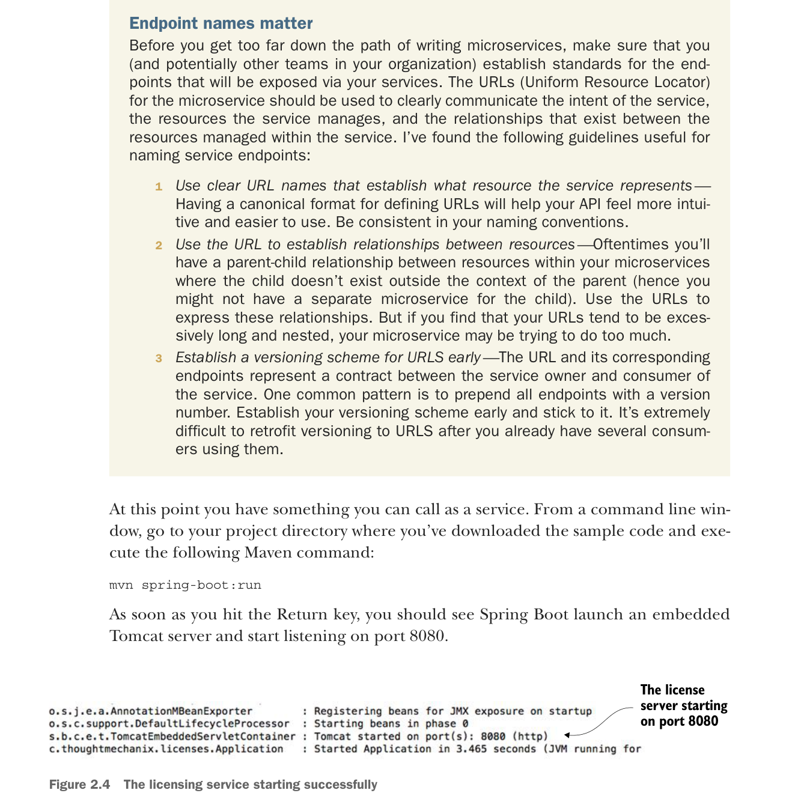

(as denoted by the {parameterName} syntax) to the parameters of your method. In your code example from listing 2.4, you’re mapping two parameters from the URL, organizationId and licenseId, to two parameter-level variables in the method:
@PathVariable("organizationId") String organizationId,
@PathVariable("licenseId") String licenseId)At this point you have something you can call as a service. From a command line window, go to your project directory where you’ve downloaded the sample code and execute the following Maven command:
mvn spring-boot:runAs soon as you hit the Return key, you should see Spring Boot launch an embedded Tomcat server and start listening on port 8080.

The licensing service starting successfully